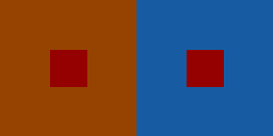
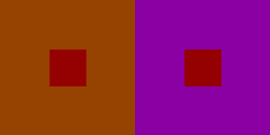
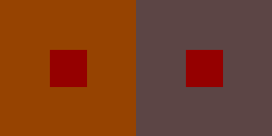
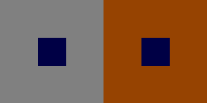
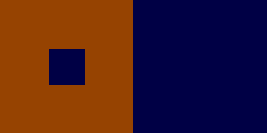
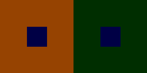
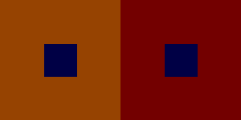
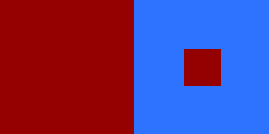
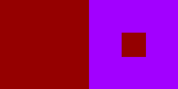
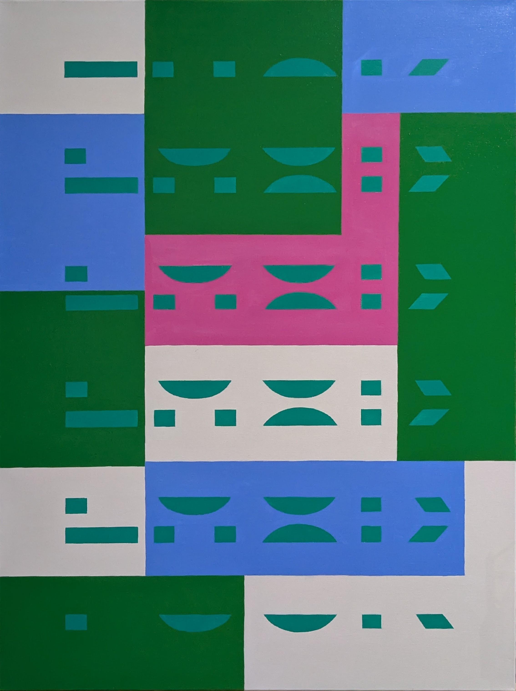

Perceptual Instability through Colour Science
Abstract
This paper describes a studio tool
for searching colour relationships that destabilise perception in
painting. Rather than treating colour science as an end in itself, I use
it as a practical instrument: given a colour I want to paint, which
surrounds are most likely to make it appear unstable, displaced, or
unexpectedly transformed? The tool, colourshift, evaluates
candidate colour pairs with CIECAM02 and ranks them in CAM02-UCS by the
size of the predicted appearance shift. The resulting images and tables
do not replace studio judgement, but they make a previously intuitive
and time-consuming search process explicit, repeatable, and extensible.
Three search modes are presented: maximal surround shift, sensitive
bases, and strongest surrounds. Together they show how a brute-force
computational search can generate structured perceptual candidates that
later become material decisions in oil painting.
Introduction: Colour as a Functional Material
Josef Albers framed colour as relational rather than fixed: a colour is never simply seen on its own, but through what surrounds it (Albers 1963). That proposition remains central to painting practice. A colour may advance, recede, brighten, dull, or appear to change hue depending on its neighbours. In the studio, these effects are usually found through repeated adjustment, comparison, and failure.
This project asks a practical version of the problem: if a painting needs perceptual instability rather than harmony, how can I search for it deliberately? More specifically, given a base colour, which surround colours are most likely to make that base appear to shift? Conversely, which base colours are especially sensitive to a given surround, and which surrounds exert the strongest influence overall?
The answer proposed here is not a replacement for painting, and
not a claim to psychophysical truth. It is a way of turning an
artistic problem into an engineering problem. The software package
colourshift (Grant 2025a) uses colour appearance
modelling to rank candidate colour relationships before they are
tested materially in paint. In that sense the computation functions
as studio machinery: a means of constructing perceptual prompts that
can later be accepted, modified, or rejected in practice. The point
is not to let the model decide the work, but to use it to pressure
intuition, widen the field of options, and expose the mechanical
basis of effects that painters have long exploited by feel.
The broader aim is to treat colour as functional material rather than descriptive colour. I am not using these searches to find pleasing combinations or naturalistic corrections. I am using them to engineer instability: to produce situations in which the viewer becomes more aware of the contingency of colour appearance and, by extension, of perception as a mechanical process rather than a transparent given (Grant 2025b).
This computational step also changes the role of making. Instead of relying only on intuitive trial and error, I can move back and forth between digital search and embodied execution. The search proposes candidates quickly, while the painting determines whether those candidates survive contact with scale, edge quality, pigment handling, surface, and duration of looking. In that sense the artist also becomes partly machinic: setting constraints, running optimisations, selecting from ranked outputs, and then translating those outputs back into the slower intelligence of paint. The value of the tool lies in this handoff. It accelerates the search space without pretending that the digital result is the work.
The Tool
colourshift is a small Python application and
command-line tool for exploring contextual colour shift (Mansencal
et al. 2025; Grant 2025a). A user chooses a base colour and a
surround colour, then runs one of three searches.
Maximal surround shift: keep the base colour fixed and search for alternative surrounds that make it appear most different from its appearance under a chosen reference surround.
Sensitive bases: keep the surround fixed and search for base colours whose appearance is especially changed by that surround.
Strongest surrounds: keep the base fixed and search for surrounds that most strongly affect its appearance when compared against the base shown within its own surround.
The tool samples candidate colours from a regular grid in sRGB and evaluates each candidate under a fixed viewing condition. This is deliberately brute-force. That choice matters for two reasons. First, the search space is non-intuitive at studio speed; brute force gives coverage where aesthetic guessing tends to be narrow. Second, it keeps the method transparent. The results are approximate because they depend on grid density, model assumptions, and display conditions, but they are still useful because they expose structured perceptual candidates rather than isolated hunches.
The examples in this paper use the default configuration exported by the tool: CIECAM02 viewing condition “Average”, background luminance \(Y_b = 20\), adapting luminance \(L_A = 64\), a \(12^3\) sRGB grid, minimum candidate separation of \(\Delta E_{\mathrm{UCS}} = 10\), and three returned candidates. The repository contains the code, metadata, and image assets needed to reproduce these examples (Grant 2025a).
Examples
The examples below step through the three search modes sequentially. The point is not to treat a single figure as definitive, but to show how different search questions produce different kinds of studio information.
Maximal surround shift
Figure 1 shows the most direct studio question and, for painting, the most useful one: a fixed red base is held constant while three alternative surrounds are compared against the working brown reference surround. The top candidate is a blue surround, with a predicted shift of \(\Delta E_{\mathrm{UCS}} = 100.68\), but the second and third candidates are also valuable because they open three distinct directions for intervention. What matters here is not only the numerical ranking but the practical prompt produced by the set as a whole: the same painted red can be made to read very differently by changing only the field around it.



#950000
is shown under the reference surround #964301 and the
three top-ranked alternative surrounds: #175ca2,
#8b00a2, and #5c4545. Read together, they
show three materially different ways to destabilise the same base
colour.
| Rank | Base | Reference surround | Candidate surround | \(\Delta E_{\mathrm{UCS}}\) |
|---|---|---|---|---|
| 1 | #950000 |
#964301 |
#175ca2 |
100.68 |
| 2 | #950000 |
#964301 |
#8b00a2 |
97.19 |
| 3 | #950000 |
#964301 |
#5c4545 |
91.16 |
For painting, this mode is useful when a base colour has already been chosen and the surrounding field is still open. The output acts as a ranked set of prompts: not instructions to follow literally, but a constrained set of strong contextual interventions. For that reason, maximal shift carries most of the visual weight in this paper. It is the clearest example of the tool operating as studio machinery rather than as a purely technical demonstration.
Sensitive bases
The second mode reverses the question. Instead of asking what
surround should be painted around a chosen base, it asks which base
colours are especially vulnerable to a fixed surround. In the
current example the fixed surround remains #964301. The
top-ranked candidate base is a dark blue, #000045, with
a predicted shift of \(\Delta
E_{\mathrm{UCS}} = 100.36\).

#000045 is shown first in a neutral grey surround and
then in the fixed surround #964301. The search ranking
itself is still computed against the base shown within its own
surround, not against grey.| Rank | Candidate base | Fixed surround | \(\Delta E_{\mathrm{UCS}}\) |
|---|---|---|---|
| 1 | #000045 |
#964301 |
100.36 |
| 2 | #2e0073 |
#964301 |
93.19 |
| 3 | #8b2e00 |
#964301 |
88.32 |
This mode is useful when the surround is conceptually fixed, for
example when a painting already contains a large colour field and
the problem becomes which inserts, bars, or accents will be most
destabilised by it. In studio use, however, I would not usually stop
at this result. Instead, sensitive bases functions as a scouting
pass: it identifies a base colour that is unusually vulnerable to
the chosen surround, and that discovered base/surround pair can then
be fed back into the maximal surround shift search. In other words,
the workflow becomes two-stage. First, find a base that is highly
sensitive to a surround already present in the work. Second, treat
that pair as the starting point for a further maximal shift search,
generating alternative surrounds that push the instability even
further. For the top-ranked candidate here, feeding the pair
#000045 / #964301 back into maximal shift
returns #000045 itself as the top-ranked surround
candidate, with a predicted shift of \(\Delta E_{\mathrm{UCS}} = 69.77\). That
top result is somewhat trivial because it collapses toward a
self-surround, so Figure 3 shows all three
returned candidates: the self-surround, followed by the greener
#002e00 and the dark red #730000. The
figure uses grey as a visual reference because the true
self-surround baseline used by the algorithm is difficult to read on
the page; the table preserves the actual ranking metric.



#000045 /
#964301, the maximal-shift search returns three
candidates: the self-surround #000045 (\(\Delta E_{\mathrm{UCS}} = 69.77\)),
followed by #002e00 (\(18.74\)) and #730000
(\(6.20\)). Showing the full set
makes the trivial top-ranked self-surround legible while retaining
the lower-ranked chromatic alternatives that are more suggestive as
painting moves.
Strongest surrounds
The third mode asks a broader question: which surrounds have the strongest effect on a chosen base when that base is compared with its appearance in its own surround? In practice, this search almost always returns black, or something very close to it, at the top of the ranking. That is diagnostically useful, but it is rarely the most interesting studio decision. For that reason Figure 4 shows the top three candidates together: the black winner with a predicted shift of \(\Delta E_{\mathrm{UCS}} = 100.15\), followed by a saturated blue and a magenta surround. In practice I usually set the black result aside and work from those lower-ranked chromatic candidates, because they preserve the strong contextual effect while opening more usable painting directions.


#950000 is
shown under the three top-ranked candidate surrounds: black
#000000, blue #2e73ff, and magenta
#a200ff. The ranking almost always places black first,
so the figure keeps that diagnostic result visible while also
showing the lower-ranked chromatic surrounds that are often more
useful in practice.
| Rank | Base | Candidate surround | \(\Delta E_{\mathrm{UCS}}\) |
|---|---|---|---|
| 1 | #950000 |
#000000 |
100.15 |
| 2 | #950000 |
#2e73ff |
93.06 |
| 3 | #950000 |
#a200ff |
88.10 |
This mode tends to surface extreme surrounds, including black in the present example, because the reference condition is the base embedded within itself rather than the current working surround. In practice, I use that not as a purely diagnostic result but as a colour exploration tool. Starting from a single base, the search opens out a wider field of possible surrounds, including options that would be unlikely to emerge through intuition alone. The highest-scoring candidate is not necessarily the one I would paint, but the ranked set provides a structured way to explore how far the base can be pushed before narrowing back to the most useful material choice.
Colour Science, Briefly
The computational machinery behind these searches is straightforward, even if the perceptual phenomenon is not. The tool begins in sRGB because that is a practical interface for screen-based search, but sRGB is not perceptually uniform: equal numerical steps in RGB do not correspond to equal perceptual steps. That is why the search does not rank candidates directly in RGB.
CIECAM02 is used to estimate colour appearance under specified viewing conditions (CIE 2004; Fairchild 2013). It produces correlates such as lightness \(J\), colourfulness \(M\), and hue \(h\), allowing the same stimulus colour to be modelled differently when the surround changes. This is not a full theory of vision, but it is a practical way to encode some of the contextual dependence long exploited in painting. At a broader level, contextual colour phenomena sit within a history of opponent-process and adaptation-based accounts of colour vision (Hurvich and Jameson 1957; Land 1977).
To rank results, the CIECAM02 output is transformed into CAM02-UCS, an approximately uniform space in which Euclidean distance acts as a usable difference measure (Fairchild 2013). For two appearances with coordinates \((J'_1, a'_1, b'_1)\) and \((J'_2, a'_2, b'_2)\), the paper uses \[\Delta E_{\mathrm{UCS}} = \sqrt{(J'_1 - J'_2)^2 + (a'_1 - a'_2)^2 + (b'_1 - b'_2)^2}.\] The search simply computes this distance between a reference appearance and each candidate appearance, then ranks candidates from largest to smallest shift.
The method is brute-force because the artistic problem is exploratory. There is no closed-form expression for “interesting” contextual colour behaviour in painting, and there is no reason to assume that intuition will find the strongest candidates efficiently. Brute-force search turns a large but finite design space into a tractable studio process. It is approximate, but it is explicit. That trade-off is useful.
Limitations and Artistic Use
Several limitations need to be stated plainly. First, this is not a psychophysical validation study. The tool predicts relative appearance shifts under a chosen model; it does not prove that every viewer will experience those shifts identically. Second, results depend on viewing assumptions, the coarse sRGB grid, display calibration, and the simplifications built into the appearance model itself (Fairchild 2013). Third, the exported figures are diagrams of candidate relationships, not substitutes for painted surfaces, pigment mixtures, edge behaviour, or duration of looking.
Those limitations are not incidental. They explain the role the tool should play in practice. The outputs are best treated as structured candidates: a way to discover colour situations worth testing materially. In studio use I would not ask whether the software has found the truth of a colour relationship. I would ask whether it has found a promising instability that can survive translation into paint.
Figure 5 shows that later stage of the process. The computational search does not determine the final composition, but it helps construct the colour problems from which a painting can be built.

Conclusion
The contribution of colourshift is modest but
practical. It does not explain away painting, and it does not reduce
perceptual instability to a number. What it does is make a certain
kind of colour question searchable. That matters because contextual
colour is often discussed pedagogically but explored manually, as if
its effects belonged to intuition alone. By combining CIECAM02,
CAM02-UCS, and a brute-force RGB search, the tool turns studio
curiosity into a repeatable procedure and makes those perceptual
pressures available for deliberate use. This was particularly useful
in a studio project that aimed to reveal both the artist- and
viewer-as-machine.
For me, the value in explorations like this lies in interplay between digital optimisations and embodied work. The software identifies candidate relations. The painting and the viewer’s mind decide what those relations can become. Colour science therefore appears here not as a detached technical discourse, but as machinery behind practice: one way of engineering perceptual instability while leaving judgement, scale, and material presence to the work itself. If the viewer encounters these paintings as unstable perceptual systems, that is because they are built through a reciprocal mechanism: computational search on one side, embodied labour on the other. The result is not a surrender of painting to the machine, but a clearer use of the machine within painting. I view this engineering approach as a deliberate exploit on the human operating system.